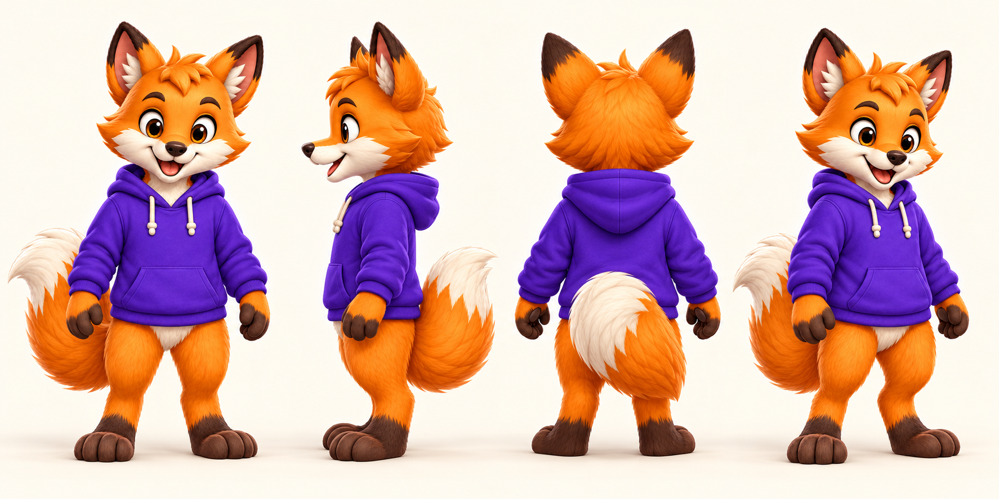
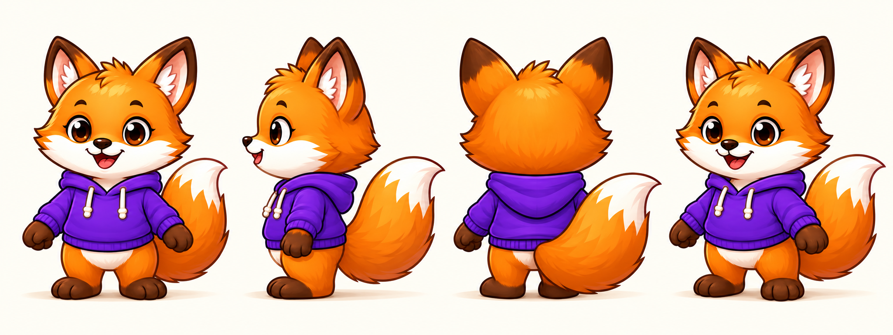
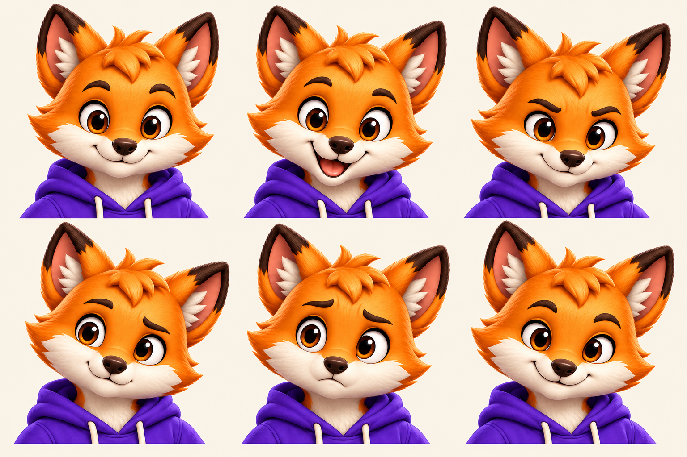
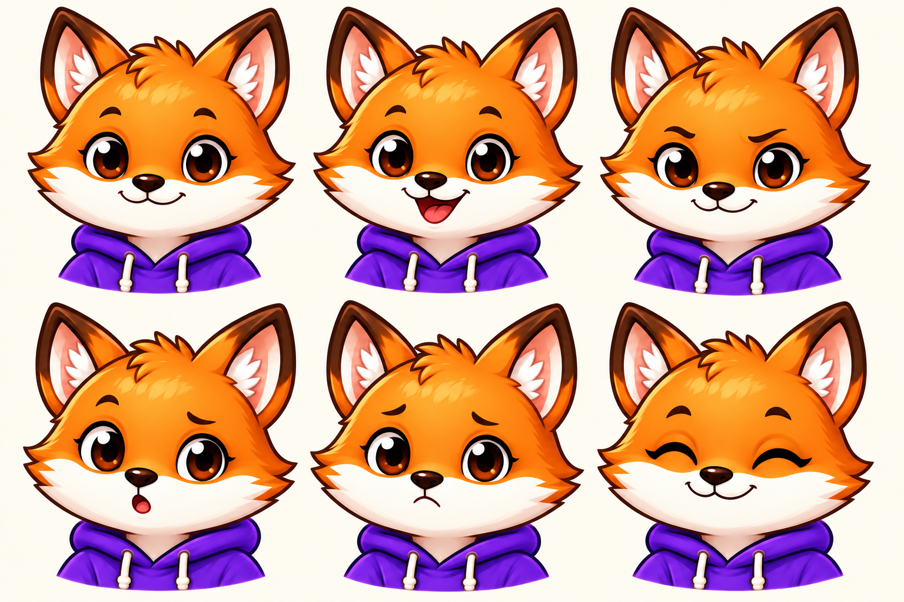

Dash · Authored reference proposals
One identity. Deliberate views.
The mature developer collection stays primary; editorial is a separate secondary family. New sheets support consistency without silently replacing approved masters.
These are newly authored studies, not recovered hidden anatomy or measured 3D turnarounds. Side/back views and expressions await maintainer selection. Sheet backgrounds are opaque off-white; use the existing transparent pose exports for cutouts.
Separate model sheets
Developer · turnaround

Editorial · turnaround

Expressions within each family
Developer · expressions

Editorial · expressions

Icons at their actual display sizes
Dedicated native fox symbol exports on a built-in navy backing. At 16px, judge the silhouette and ears rather than facial detail. These are not full-body Dash crops. Sizes below are CSS pixels with no enlargement.
Favicon SVG · Avatar SVG · 256px avatar · 512px avatar · Export/inspection receipt